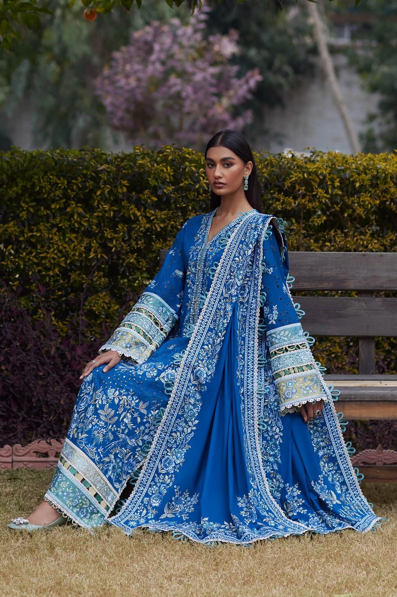

Lawn for Winter: Breaking the Norms with TrendAura
Introduction
While lawn is typically associated with summer, its versatility makes it a great option for winter as well. TrendAura introduces a unique collection of winter lawn suits that promise to keep you stylish and warm, featuring rich colors and beautiful prints that are perfect for the season.
Why Choose Lawn in Winter?
- Lightweight Yet Warm: Lawn can be layered under shawls or jackets, providing warmth without bulk.
- Vibrant Patterns: The winter lawn collection boasts intricate designs in rich colors, perfect for making a statement.
- Easy Care: Lawn is easy to wash and maintain, making it a practical choice for busy individuals.
Styling Tips for Women
- Layering Magic: Pair your lawn kameez with a long woolen cardigan or a fitted jacket. Choose accessories in complementary colors to enhance your look.
- Mix and Match: Don’t hesitate to mix lawn tops with different bottoms like palazzos or sharara pants for a fusion look.

Styling Tips for Men
- Smart Casual: Combine a printed lawn shirt with chinos for a relaxed yet polished look.
- Event Ready: Dress up your lawn outfit with a traditional kurta style and accessorize with a shawl for a formal occasion.
Conclusion
“Style is a way to say who you are without having to speak.” – Rachel Zoe. Lawn can be a stunning choice for winter when styled correctly. Check out TrendAura’s Winter Lawn Collection to find your perfect ensemble.